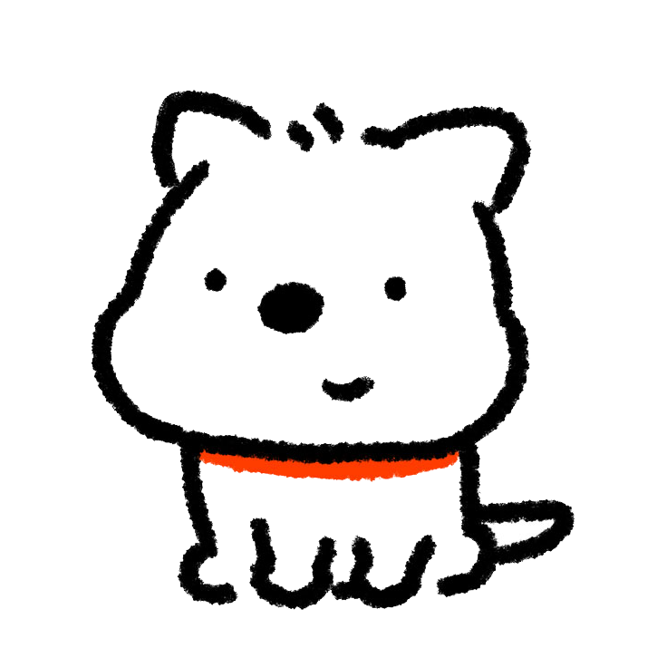
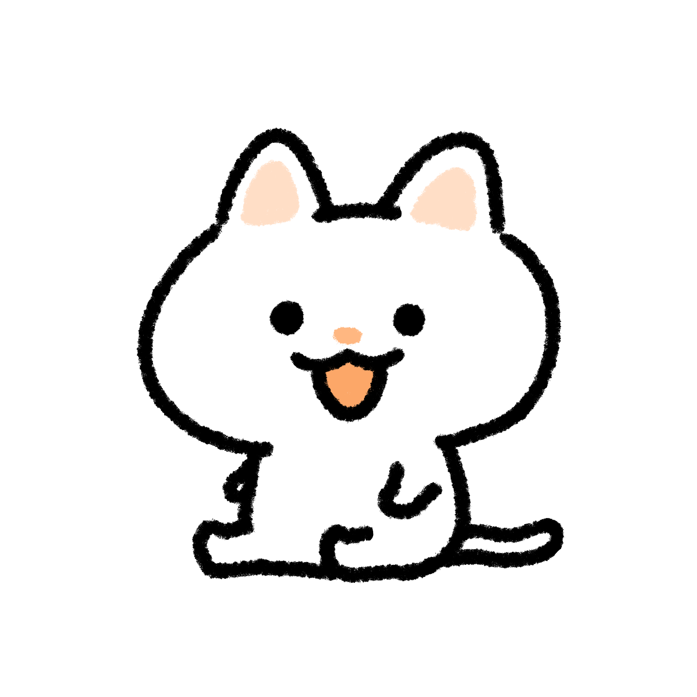

CHARACTER




じゃく
もうすぐ高校生になる中学三年生
タイピングを愛している男
元陸上部。種目は幅跳び
趣味はアニメと小説、サイト作り
性格はかなりひねくれている。素直じゃない。
一言:よろしく！

ココツ
じゃくの助手。プログラミングに詳しい
趣味はネットサーフィン、ホラーゲームをすること
性格はちょっとだけ悪戯好きだが、とても素直で優しい。
一言:じゃくくんはおもろいよ
ウサ
ある日じゃくの家に来た謎のうさぎ。
現在は友達で、プログラミングを愛してやまない子。
得意言語はJavaScriptとTypeScript。
どこかのアニメ風の喋り方をする。
性格は負けず嫌いだけれど、意外とビビり。じゃくのことを尊敬している中二病キャラ。
一言:よろしくです！！
うｐ主
このサイトのうp主。普通にアップロードするの大変だった。
ちなみにこのサイトを作ったのはじゃく。
アップロードしたのは僕です。
言っておきますが、じゃくではありませんよ
一言:気軽に話しかけてね
葵
じゃくがパソコンをいじっていたら、なぜかこっちの世界に来てしまった少女。
背中に羽が付いているため天使だと思われがちだが、実際はまったく飛べないらしい。本人いわく「人間」。
ドジであわてんぼうだが、とても素直で誰にでも優しい性格。少しツンデレ気味。
プログラミングはよくわかっていないが、なんだかんだでじゃくたちの話し相手になっている。


一言:よくわからないけどよろしくね！
ミエ
突然じゃくの家に現れた、無邪気で明るい少女。謎の制服を着ているが、気にしないことにしている。
人懐っこく距離感というものが彼女の頭の中からなく、初対面でもすぐ懐く。
なぜか葵のことを「お姉ちゃん」と呼び、当然のように隣にいる。理由を聞いても「だってお姉ちゃんだから」としか説明しない。
裏表がまったくなく、思ったことをそのまま口にする。悪気ゼロで爆弾発言をする天然タイプ。
じゃくたちのことをすでに「親友」と認識しており、特にじゃくには――
「じゃくは、わたしのいちばん大切な人だよ？」
……と、本人は深い意味なく言っている。